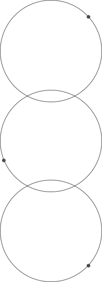
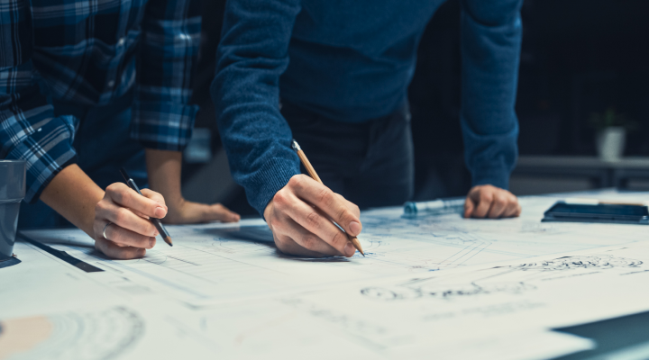
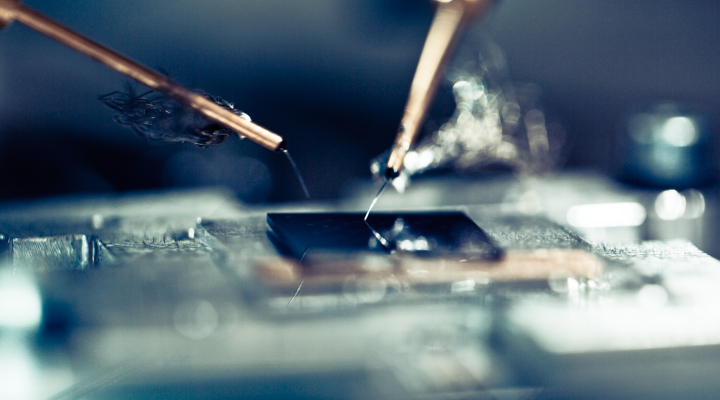
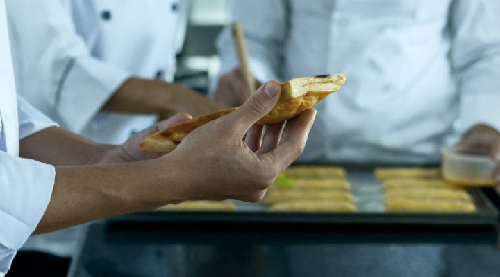

소프트밀은 끊임없는
기술연구를 통해
미래로 나아갑니다.
기술연구를 통해
미래로 나아갑니다.
혁신기술연구
고객의 의견을 반영한 제품 연구 개발 체계를 운영하며
엄격한 검수를 통해 품질이 보증된 제품을
생산하고 있습니다.
소비자 니즈를 반영한 연구 개발 체계

기술연구소
소프트밀은 자체 기술연구소를 통해
엄격한 기준으로 제품을 R&D하고 있습니다.

설계 디자인실
엄격한 테스트를 거친 조작반만을 사용
개발 설계 단계에서 철저한 품질기준을 설정하고, 상업용 환경에 견딜 수 있는 구조로 설계하여 높은
품질을 보증합니다. 개발된 시제품은 기술 개발 연구원의 반복 시험을 거치며 샘플 매장에서 제품을
일정 기간동안 사전 사용하면서 제품의 하드웨어 및 소프트웨어를 검증한 후 양산
단계에 들어갑니다.

조작반 검사실
제과제빵기능장의 테스트를 거친 제품만을 출시
모든 제품의 제어부, 전원부, 조작부의 PCB는 엄격한 조건의 시험을 거쳐 조건에 합격한 전자회로 및
전자 부품만을 적용합니다. 전기용품 안전인증 및 전자파 적합등록 대상 제품은 공인기관으로부터 인증을 취득하여 생산·출하되고 있습니다.

제빵 시험실
제과제빵기능장의 테스트를 거친 제품만을 출시
연구 개발된 신제품은 대흥소프트밀의 제과제빵 시험실에서 당사 재직 제과제빵기능장에 의해
제빵 성능 및 품질 검증, 사용자 편의성 등의 반복 시험을 거쳐 현업 제빵사의 의견이 충분히 반영된 제품으로 최종 출시됩니다.
경기도 광주시 초월읍 동막골길 276 (학동리 62-1)
TEL : 031-762-2045
FAX : 02-404-2789
AS콜센터 : 1588-4891


Copyright © (주)대흥소프트밀 2022. All Right Reserved